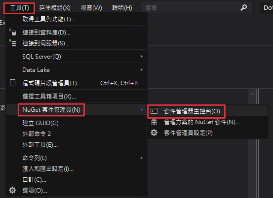
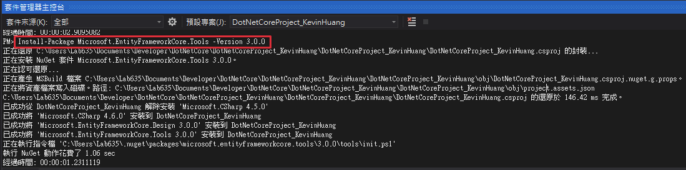

前言
接續上一篇我們建立完資料庫及資料表，這一篇會帶大家了解MVC程式架構的基本概念，以及什麼是前後端分離，最後在實作的部分會帶大家在上次建立的API專案中安裝Entity Framework Core 3.0（EF Core 3.0），並在專案中透過EF Core建立Model，該Model會對應到資料庫的資料表結構。
這一系列的文章比較偏向讓大家看完能夠有一些比較基本的觀念，並且會附加比較多的實作教學，因此可能解釋一些觀念的時候，不會用太精細的方式來與大家做探討，請大家多多見諒！主要想讓大家對觀念的理解可以剛好輔助實作就好，如果對觀念有更深的興趣歡迎尋找更多文章，或者看我文中提到的更深入的文章，也可以在下方回應與大家分享自己看到的資訊哦～！
基本概念
MVC概念
MVC是一種軟體的架構模式，主要是把軟體系統的程式分成三層：模型（Model）、視圖（View）和控制器（Controller）。主要是Model <-> Controller <-> View這樣的方式在做程式溝通。而我自己在開發過程中還會再多一層，這一層會放在Model以及Controller之間，可以把它稱作業務邏輯（Service），所以最後會變成Model <-> Service <-> Controller <-> View層這樣子，以下簡單以實作面讓大家理解一下每一層的作用：
- 視圖（View）：從Controller獲得資料，並且進行介面設計與渲染。
- 控制器（Controller）：做整體程式流程的控制，接收View的資料請求，並且呼叫Service來完成業務邏輯，最後將資料回傳到View進行顯示。
- 業務邏輯（Service）：負責業務邏輯的相關工作，會呼叫Model去撈取資料庫資料。
- 模型（Model）：與資料庫的資料表有對應關係，Service可以透過Model撈取資料庫中的資料。
簡單來說就是以上這樣，如果想要對MVC了解更多的可以先參考這篇網路上我覺得寫得不錯的討論文章，以及文章下面更多的資源：MVC是一個巨大誤會
前後端分離
在上方的MVC架構中，Controller在完成View的請求之後，會將資料傳到View上顯示，並且也有看到圖片中標示了「前端」與「後端」。而其實這邊的「View」指的就是前端的部分，在ASP.net 的MVC專案中，前端跟後端其實是無法「完全分開」的，如果你架設專案的伺服器壞了，是整個網站都一起會掛掉，簡單來說，前後端在這種MVC架構下其實是綁在一起的。
而前後端分離就如同他字面上的意思，將前端與後端完全分離，分成兩個部分，甚至是兩個專案來做。我們可以先看下面這張圖，當前端需要資料時，會發出請求給後端，後端去資料庫存取資料後，再把資料回傳到前端去。
而如果用更簡單的方式來畫圖，就會變成下面這副德性
而前後端分離就是在前端跟後端這個請求跟回傳的部分，不是透過在專案內連結的互傳，而是透過一個叫「API」的東西來進行交互。
而API是什麼東西呢？API的全稱叫做「應用程式介面 (Application Programming Interface)」，我會比較喜歡叫他“應用程式接口”，當兩個不同專案需要進行交互的時候，通常就會透過API來進行溝通，前端專案透過呼叫後端專案所開放出來的API，來存取後端專案的資源。
我用個飲料機的例子舉例，我今天想要喝一杯飲料，所以我（前端）透過去點擊飲料機上的按鈕（API）來叫飲料機給我飲料（後端）：
- 「我」想要一瓶「飲料」：「前端」發出「需求」
- 「飲料機上的按鈕」：「API」
- 「飲料機」給我「飲料」：「後端」回傳「資料」
就是像這個樣子，而所謂後端的API專案，也就是我們在第一堂課建立的WEB API專案，因此我們在未來的實作中將會透過.Net Core來做API與後端的邏輯，然後前端的專案則是另外實作。之後帶大家做後端的API專案，並且再教大家如何透過軟體（Postman）或者前端去對後端API發出請求，大家就會很明瞭上面所說的這些觀念了！
什麼是Entity Framework Core 3.0（EF Core 3.0）
Entity Framework Core是微軟新一代出的Object-Relational Mapping（ORM）框架，是以.Net Core實作出來的。主要適用於透過程式碼來處理Model以及資料庫結構對應的工作。
.Net Core是從.Net Framework發展而來，而Entity Framework Core 3.0（EF Core 3.0）則是從Entity Framework發展而來的，算是進化版。給使用者呼叫的函式介面類似於Entity Framework，但是底層幾乎是砍掉重練的。
Object-Relational Mapping（ORM）：物件關係映射，在MVC架構中「Model」就是以ORM的方式運作的，主要作用就是在關聯式資料庫與實體的物件之間做一個對應，這樣我們就可以透過程式去操作物件，效果等同於我們去下SQL指令來對資料庫做操作，可以讓開發者在程式中以更簡易的方式對資料庫進行操作。
這個套件大家就看一下概略的介紹，有興趣可以去查詢官方的介紹比較清楚，接下來我就帶大家來開始在專案中裝上這個套件啦！
開始實作
安裝EF Core 3
以下步驟將帶大家安裝兩個套件：
- 「Microsoft.EntityFrameworkCore.SqlServer」
- 「Microsoft.EntityFrameworkCore.Tools」
以下步驟將以「Microsoft.EntityFrameworkCore.SqlServer」套件為例
- 再次開啟在第一篇所建立的WebApi專案
- 因為.Net Core算是跨平台的專案，因此我會比較多讓大家使用指令模式來進行操作。接下來選上面的「工具 -> NuGet套件管理員 -> 套件管理器主控台」，開啟指令的NuGet套件安裝管理員（下方的「管理方案的NuGet套件」則是圖形化介面，可以比較方便管理套件）
NuGet：是Microsoft 支援的共用程式碼機制，它定義了如何建立、裝載和取用.NET中的「套件」。

- 開啟後可以在下方的視窗看到如下畫面，底下「PM>」就是要輸入指令的位置

接下來輸入以下NuGet的指令，安裝
「Microsoft.EntityFrameworkCore.SqlServer」套件
1 | PM> Install-Package Microsoft.EntityFrameworkCore.SqlServer -Version 3.0.0 |
要注意，網路上查到有些指令是使用
dotnet add package指令來安裝的，該指令是要用作業系統本身的命令列工具（如Windows 的命令提示字元）去安裝的，在NuGet視窗中輸入此指令會不能成功執行唷～！
- 等待安裝過程跑完之後，可以點開右邊「方案總管」中的「相依性->套件」，就可以看到剛剛安裝的「Microsoft.EntityFrameworkCore.SqlServer」套件了
- 接下來以同樣步驟安裝「Microsoft.EntityFrameworkCore.Tools」，請輸入以下指令：
1 | PM> Install-Package Microsoft.EntityFrameworkCore.Tools -Version 3.0.0 |

- 右邊「方案總管」中的「相依性->套件」就會有兩個套件安裝了
透過EF Core 3建立模型對應
我們可以透過EF Core套件，幫我們自動在程式中建立資料模型，對應到我們第二堂課所建立的資料庫資料表，而接下來就要帶大家了解一下怎麼做到這件事。
- 首先點擊上方「工具」，找到「NuGet套件管理員」並選擇「套件管理主控台」，準備用下指令的方式對應資料庫
- 接下來輸入以下套件的指令，建立實體的資料對應模型，對應到先前建立的資料庫與資料表：
1 | PM> Scaffold-DbContext "Data Source=localhost;user id=dotnetcore;password=dotnetcore; persist security info=True; Initial Catalog=dotnetcore;" Microsoft.EntityFrameworkCore.SqlServer -OutputDir Models -Force |
指令的解釋如下，不知道的人可以看，或者直接去官方文件看一下
- Scaffold-DbContext：「EFCore Tools」套件中用來產生資料實體模型的指令
- Data Source：資料庫的來源，這邊是輸入本機IP，把專案架上伺服器時會需要修改
- user id：資料庫登入角色的名稱
- password：資料庫登入角色的密碼
- persist security info：宣告為 True 時，代表當SQL連線已經建立，也會將密碼儲存在記憶體中，供後續程式引用
- Initial Catalog：就是要對應的資料庫
- Microsoft.EntityFrameworkCore.SqlServer：指定套件去進行動作
- -OutputDir：將檔案放入目錄。 路徑是相對於專案目錄，這邊要把建立出的實體資料模型放入「Models」資料夾中
- -Force：覆寫現有的檔案。
- 完成後就會看到右邊的檔案目錄多了「Models」資料夾，並且裡面多出了「dotnetcoreContext.cs」以及「Member.cs」
- 以下解釋一下剛剛自動對應產生的兩個檔案分別的功能：
dotnetcoreContext.cs：此檔案其實是資料庫名稱+Context組成的檔名，裡面會放資料庫連線的資訊以及模組對應的資訊，該檔案是透過EFCore套件自動產生，因此初期不會修改到
Member.cs：此檔案是資料庫中資料表的模型，裡面的資料欄位跟型態會對應到資料庫的資料型態。
看到以上畫面就代表你成功安裝了EF Core 3.0套件，並且也透過指令將資料庫與資料表對應到程式碼中，未來如果資料庫結構有更新時，只要打開「NuGet套件管理器主控台」，再次輸入以下指令即可重新對應並覆蓋程式碼囉：
1 | PM> Scaffold-DbContext "Data Source=localhost;user id=dotnetcore;password=dotnetcore; persist security info=True; Initial Catalog=dotnetcore;" Microsoft.EntityFrameworkCore.SqlServer -OutputDir Models -Force |
下一篇將帶大家建立MVC + Service的程式架構，並且寫一個簡單的會員子系統操作給大家當做示範。